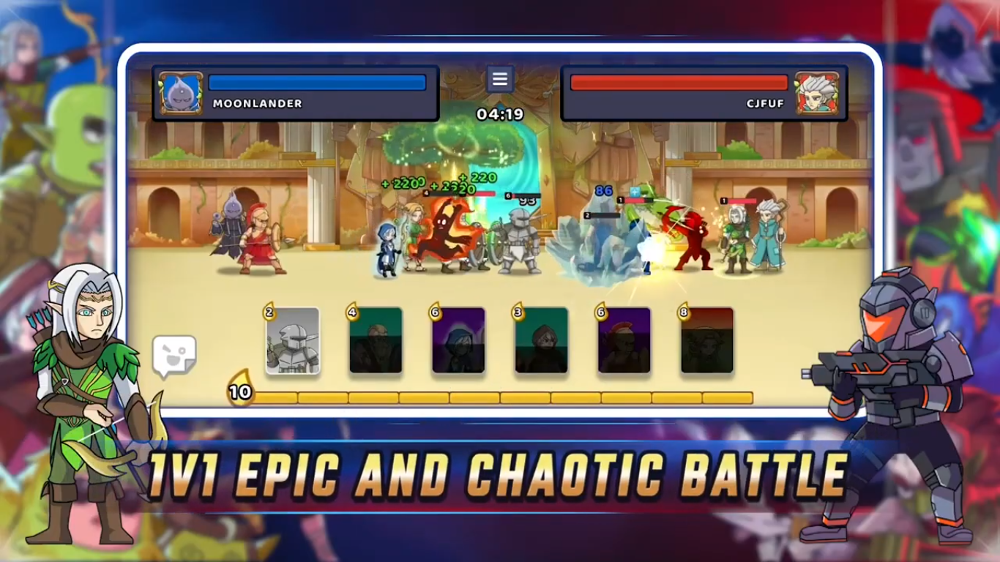
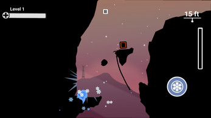
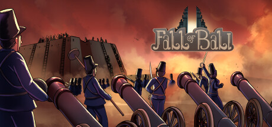
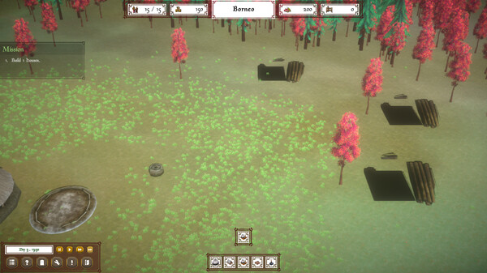
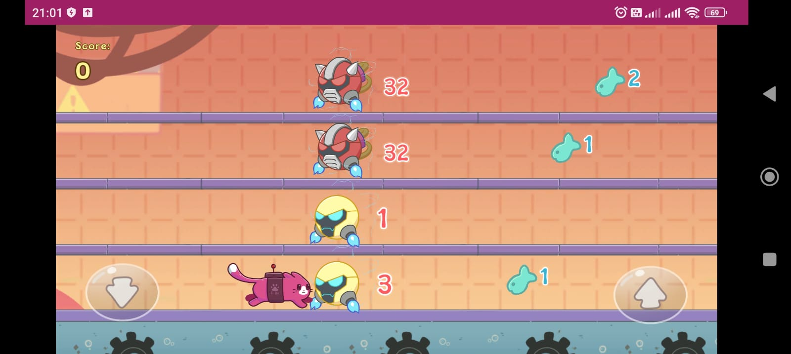

Muhamad Ikhsan
Game Developer | Technical Artist | Unity Developer
This is a collection of game projects I have worked on.
This game is a side-scrolling 2D adventure where players assume the role of a summoner, wielding the power to call forth heroes from various races and classes to battle against an opposing summoner. The objective is to strategically summon and deploy these heroes to defeat enemy forces.
As a Unity developer on this project, I was responsible for developing the gameplay mechanics, creating unique VFX and SFX, and synchronizing online data with the game’s trough API and developing with Multiplayer service like Photon. Unfortunately, the game is no longer available due to inactive servers.
View Project Project preview this is a 2D platformer game that you play as stone to reach the peak, with trajectory control, collect any element you found and use it.
View Project Fall of Bali is a historical strategy set in Bali set around 19th century. Divided in many kingdoms after fall of Bali Empire, Bali has fall in warring era for nearly 2 centuries and now the threat of imperialism come. With all your kingdom potential, can you survive and win this era?.
In this project, I contributed to various aspects of the game, including core gameplay mechanics, audio systems, AI unit development, and state event management, among others.
View Project Live on driest land in Indonesia, The Timorese adapted this difficult situation with corn’s cultivation, but the imperialism created disruption in Timor. Now get ready to manage Timor’s farming as Temukung and face many difficult situations in Timor from middle 19th century until World War II.
In this project, I contributed to various aspects of the game, developing core gameplay mechanics, audio systems, AI unit development, and state event management, among others.
View Project A board card multiplayer game that allows players to join rooms and compete with others for fun, winning non-profit chips without any gambling involved.
In this project, I contributed to various game aspects, including developing core gameplay mechanics, audio systems, a history system feature, and a pop-up API-based feature, as well as implementing multiplayer services with Photon Fusion. I also worked with APIs to manage game data for game functionality.
I worked on a WebGL game that is included in an app featuring various hyper-casual games.
In this project, I contributed to various game aspects, including developing core gameplay mechanics,visual effects, and a pop-up API-based feature.
View Project 